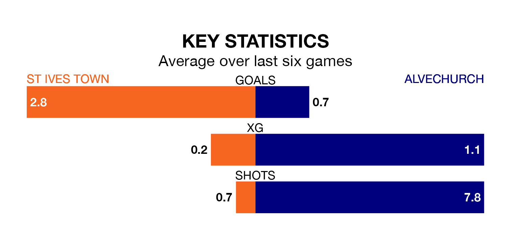

St Ives Town are heavy favourites to keep all three points at home in Saturday's kick-off against Alvechurch.
St Ives, who sit eighth in the Southern League Premier Central with 41 games played, are priced at 1.5 to seal victory.
Sitting nine places and 16 points behind them in the table, Alvechurch are 4.5 to win with *Betting Company*, while the draw is at 4.5.
With 88 goals in 41 games so far this season, St Ives are the league's highest scorers with 2.1 goals per game. But they are conceding more than average too, letting in 70 goals at a rate of 1.7 per game.
Alvechurch, meanwhile, are below average scorers, with 1.3 goals per game, compared to a league average of 1.5. They have conceded 1.7 goals per game.
In the last 10 years, St Ives and Alvechurch have played each other on eight occasions. St Ives won three of them, Alvechurch four, and they drew once.
On average, St Ives scored 1.4 goals and Alvechurch 1.5 in those matches.
Their last meeting was on March 9, when St Ives won 4-1 away.
Town are in reasonable form in the Southern League Premier Central, with four wins and two losses from their last six games.
With two wins and four losses over that period, the visitors' form is much worse – they have taken six points from 18, compared to the home team's 12.
St Ives's last match was on April 20, a 4-3 loss against Halesowen Town.
Alvechurch lost 2-1 against Coalville Town last time out, on April 13.
Updated: 07:59 (UTC), 26/04/24